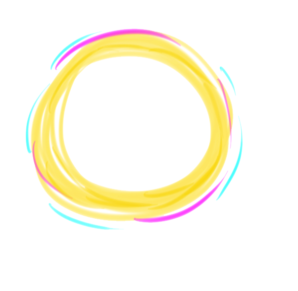

LEONARSF

Nasci em 23 de setembro de 1994, fiz Ciência da Computação no IFCE (2013-2016). Ensinei lógica de programação para crianças e adolescentes em escolas do município de Maracanaú como bolsista, pelo projeto do instituto IDEAR no ano de 2016. Fiz diversos cursos relacionados a ilustração, dentre eles desenho técnico e anatomia. Fiz curso de quadrinhos (ilustração e roteiro) e cinema de animação em extensões da UFC. Produzo jogos analógicos autorais desde 2011, em sua maioria sendo jogos de cartas com foco em deck-building game e party game. Experiência média em softwares de edição de imagem e som. Conhecimento teórico como game designer. Com um pouco de experiência prática em level design e design de interface para jogos digitais. Toco teclado, baixo, guitarra e violão, produzo OST's para jogos digitais. Estudante de Sistemas e Mídias Digitais na UFC desde 2017.2.